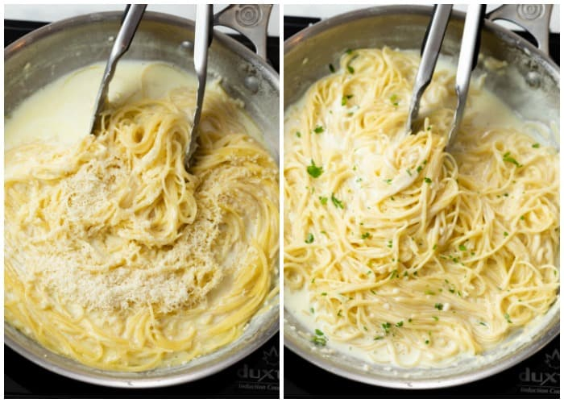

Garlic Parmesan

Ingredients:
- 1/2 cup Parmesan cheese, finely grated
- 3 Tablespoons better, divided
- 4 cloves fresh garlic, minced
- 2 cups chicken broth
- 1 cup milk
- 8 ounces angel hair pasta
- Optional garnishFresh Parsley
Instuctions:
On medium heat, melt the butter and then add garlic, cook for one
minute. Then add chicken broth. Stir in the milk. Bring to a boil
before adding the pasta.
Once the pasta noodles have softened, twist them to go around the pan.
Tip: Kitchen tongs are best for this.
Let the pasta cook for 4-5 minutes. Once finished, reduce heat to low,
add 1 tbsp butter and toss to coat. Next, sprinkle the parmesan cheese
into the sauce and stir to combine. It will thikcen upon standing.
Tip for Extra Creamy Sauce
- Use a block of Parmesan cheese. Always shed the cheese youself,
it will taste and melt much better. Belgioioso Parmesan cheese.
Note: The that is very aged will not melt as well.
- Turn off heat before adding the cheese, if the pan is too hot, the dairy
will seperate and you'll have a grainy consistency instead of the intended creamy.
- Add the cheese gradually as opposed to all at once.
Stir in continuously as it's added.